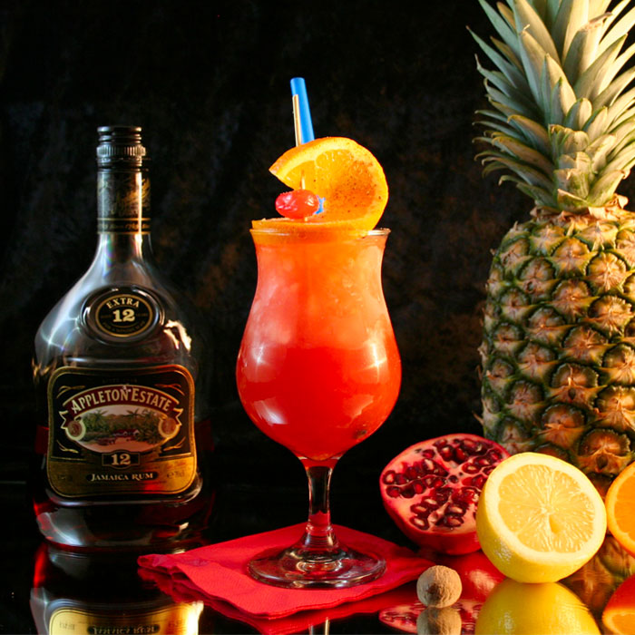

PlanterPunch Cocktail Juice

Description
Planter's Punch is a classic tropical cocktail known for its refreshing and fruity flavors.
It's a rum-based drink that typically includes a blend of citrus juices, sweeteners,
and sometimes grenadine or other fruit syrups.
Ingredients
- 2 oz (60 ml) dark rum
- 1 oz (30 ml) freshly squeezed lime juice
- 1 oz (30 ml) freshly squeezed orange juice
- 1 oz (30 ml) pineapple juice
- ½ oz (15 ml) grenadine syrup
- ½ oz (15 ml) simple syrup or sugar syrup
- Dash of Angostura bitters (optional)
- Lime or orange slices for garnish
- Ice cubes
Instructions to be followed in making Planter's punch Drinks juice
- Fill a cocktail shaker with ice cubes.
- Add the dark rum, lime juice, orange juice, pineapple juice, grenadine syrup, simple syrup, and Angostura bitters (if using) to the shaker.
- Shake the mixture vigorously for about 15-20 seconds to combine and chill the ingredients.
- Fill a glass with ice cubes.
- Garnish with a slice of lime or orange.
- Serve and enjoy!